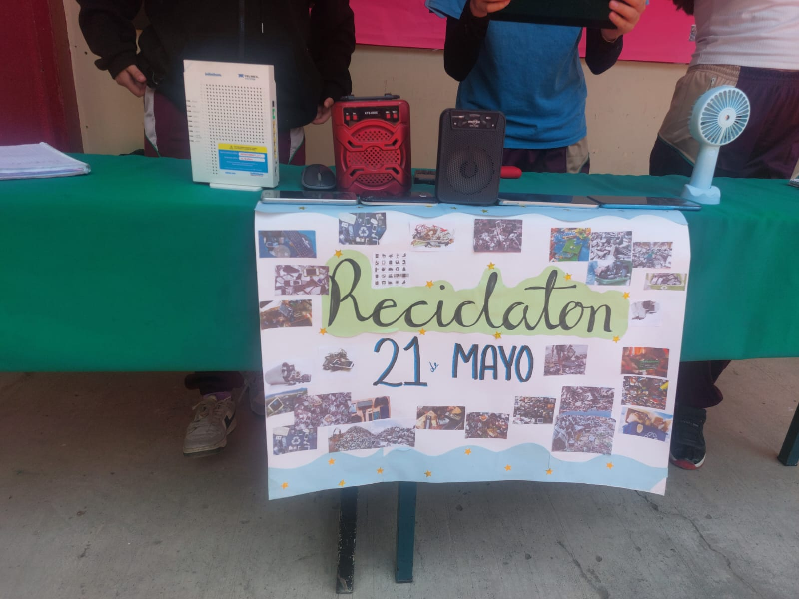
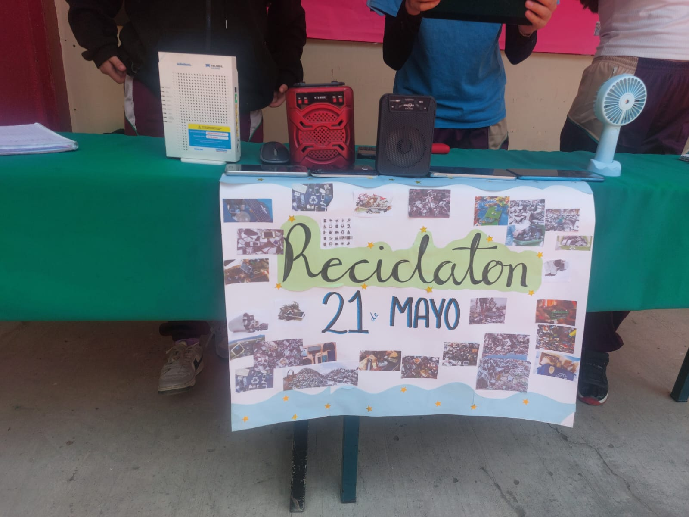

PROYECTO PAE
RECICLATÓN
¿Qué es el reciclaje informático?
El reciclaje informático es el proceso de reutilizar, desensamblar o eliminar correctamente los dispositivos electrónicos como computadoras, celulares, impresoras, El objetivo principal es evitar que estos desechos terminen en vertederos y, en cambio, sean gestionados de manera responsable para proteger el medio ambiente y la salud pública, etc.
Beneficios del Reciclatón
Reduce la contaminación y el uso de vertederos.
Fomenta la economÃa circular.
Promueve la cultura ambiental en la comunidad.
Ayuda a reutilizar materiales útiles.
Evita que residuos peligrosos terminen en la naturaleza.
📦 ¿Qué puedo llevar al Reciclatón?
📄 Papel limpio y cartón
🥤 Botellas y envases de plástico
🛠Aparatos electrónicos en desuso
🔋 Pilas y baterÃas
🧴 Envases de vidrio y metal
Ejemplos del reciclaje
Haz clic en las imágenes para ampliarlas.
 



Video educativo sobre reciclaje
🮠Juego: Aprende a separar residuos
¿Cómo jugar? Lee la pregunta y elige el bote correcto para tirar el residuo.
Colores de los botes:
- 🟡 Amarillo: Plástico y metales
- 🟢 Verde: Vidrio
- 🟦 Azul: Papel y cartón
- ⚫ Gris: No reciclables
- 🟤 Marrón: Orgánicos